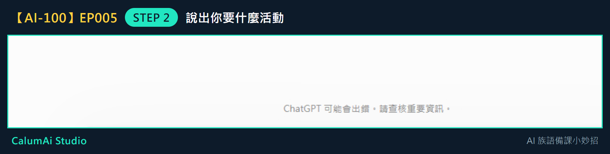
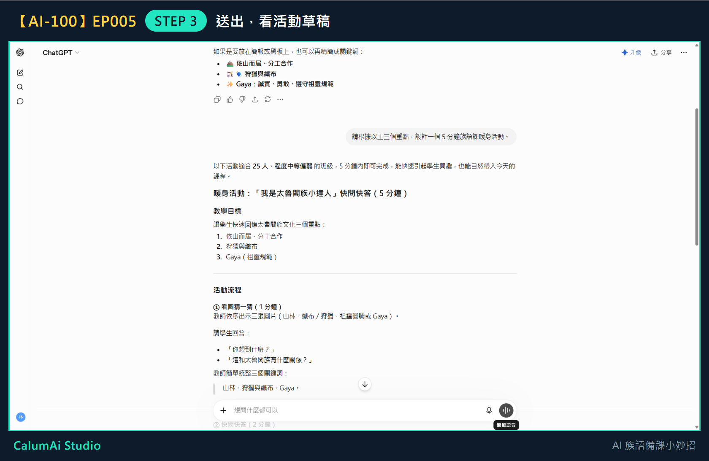

EP005 講義：請 ChatGPT 幫忙設計 5 分鐘暖身活動
今天只做一件事
把教材重點變成一個 5 分鐘暖身活動。不做完整教案、不做評量設計，這些留到之後幾集。
需要準備
- 上一集整理好的 3 個教材重點。
- 已經能進入 ChatGPT 並輸入問題。
步驟 1：接著上一集的對話問
不用重新開始。 上一集整理出三個重點的那個對話，直接往下問就好——ChatGPT 記得剛剛整理的內容。
步驟 2：說出你要什麼活動
在輸入框打上：
請根據以上三個重點，設計一個 5 分鐘族語課暖身活動。
打好之後長這樣：

這句話裡有三個關鍵:「根據以上三個重點」（接續前面）、「5 分鐘」（時間）、「暖身活動」（用途）。三個都說清楚，它給的東西才會準。
步驟 3：送出，看活動草稿

它給的活動有名稱、目標、時間分配、詳細流程——這就是一份可以往下修改的草稿了。
步驟 4：檢查三件事
拿到活動先看這三個地方：
- 時間：真的做得完嗎？
- 步驟：學生聽得懂嗎？
- 場地：教室的桌椅擺設做得到嗎？
步驟 5：不滿意就直接說
- 太難 → 「請改簡單一點」
- 太長 → 「請縮短成 3 分鐘」
- 學生太多做不到 → 下一集會專門練這個
老師的小提醒
- 這個活動是草稿，不是成品——重點給 AI，活動老師改，一定要依自己班級狀況調整過再用。
- 暖身活動可以放在上課前 5 分鐘，幫學生先開口說一點族語。
今日金句
重點給 AI，活動老師改。
下一集預告
下一集，我們會練習把活動改成更適合自己班級的版本。